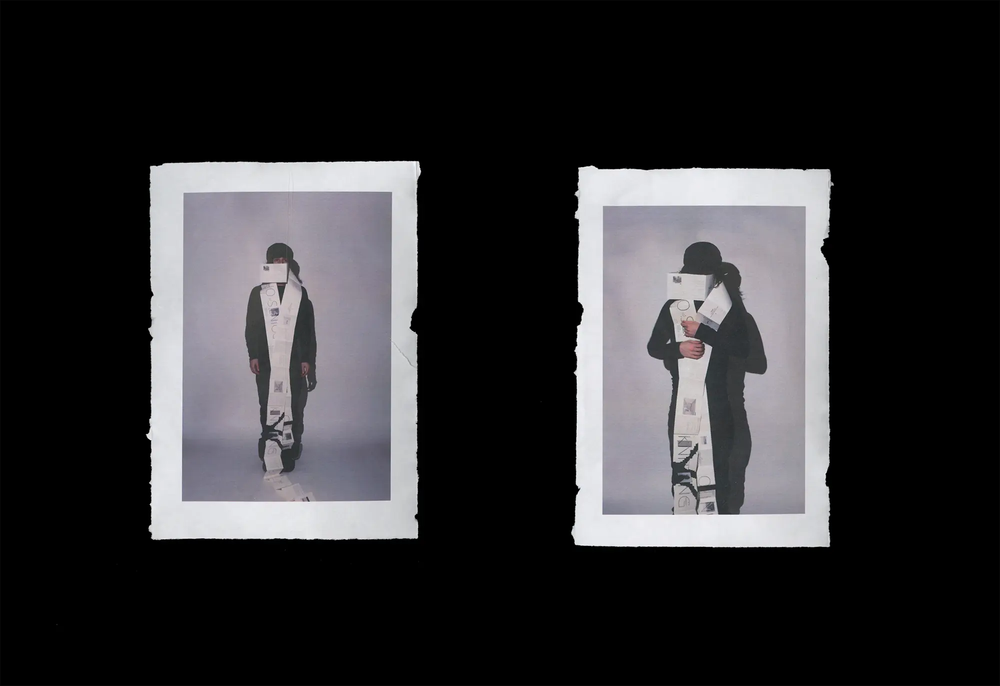
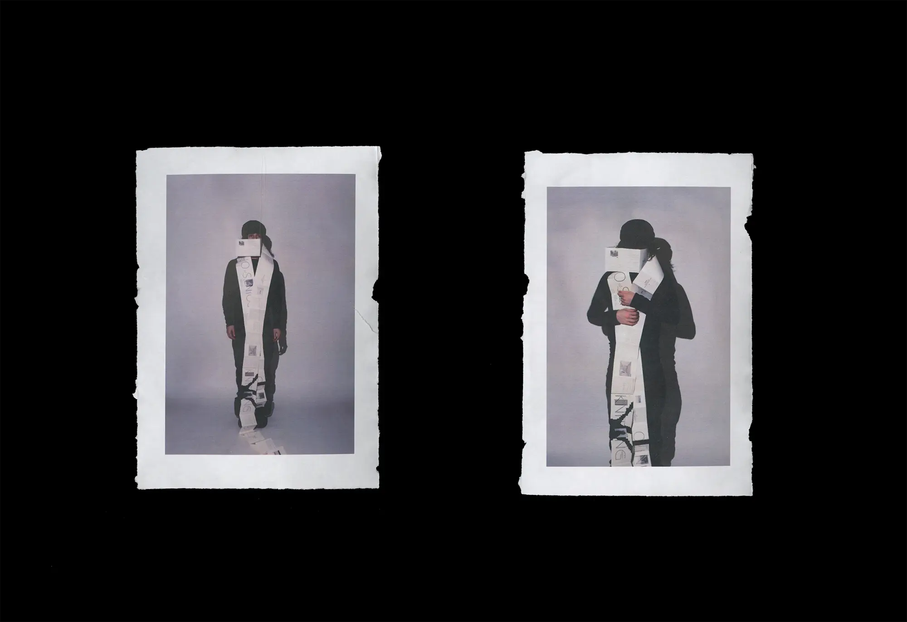

Born to be Somebody
Motion, Print
2024
Motion, Print
2024
An accordion book that explores my relationship to my mother and its influences on how I understand motherhood. The conclusion I come to in the book is the idea of obsolescence, and how the roles of mother and daughter change as we become "obsolete." The book connects these thoughts to knitting, with a scarf accompanying it.
The accordion book is 200 inches in length. There is a navigational system made with hole punches connected to the idea of punch cards in machine knitting.
Lastly, a motion inspired by the design system of the project, made with After Effects.
The accordion book is 200 inches in length. There is a navigational system made with hole punches connected to the idea of punch cards in machine knitting.
Lastly, a motion inspired by the design system of the project, made with After Effects.

 
